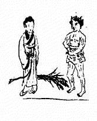
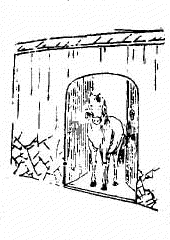
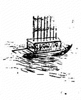
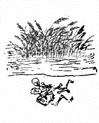
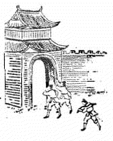
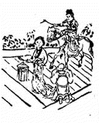
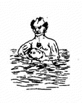
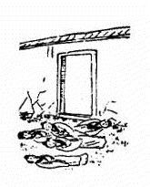
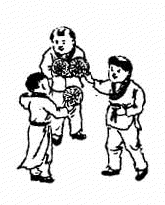

1. 31 甲午 ䷤ 离下巽上 家人 1.1. 讖曰 1.2. 頌曰 1.3. 金聖歎 2. 32 乙未 ䷯ 巽下坎上 井 2.1. 讖曰 2.2. 頌曰 2.3. 金聖歎 3. 33 丙申 ䷛ 巽下兑上 大过 3.1. 讖曰 3.2. 頌曰 3.3. 金聖歎 4. 34 丁酉 ䷸ 巽下巽上 风 4.1. 讖曰 4.2. 頌曰 4.3. 金聖歎 5. 35 戊戌 ䷐ 震下兑上 随 5.1. 讖曰 5.2. 頌曰 5.3. 金聖歎 6. 36 己亥 ䷈ 乾下巽上 小畜 6.1. 讖曰 6.2. 頌曰 6.3. 金聖歎 7. 37 庚子 ䷩ 震下巽上 益 7.1. 讖曰 7.2. 頌曰 7.3. 金聖歎 8. 38 辛丑 ䷔ 震下离上 噬咳 8.1. 讖曰 8.2. 頌曰 8.3. 金聖歎 9. 39 壬寅 ䷚ 震下根上 颐 9.1. 讖曰 9.2. 頌曰 9.3. 金聖歎 10. 40 癸卯 ䷑ 巽下根上 蛊 10.1. 讖曰 10.2. 頌曰 10.3. 金聖歎 1. 31 甲午 ䷤ 离下巽上 家人 1.1. 讖曰 当涂遗孽 秽乱宫阙 一男一女 断送人国 1.2. 頌曰 忠臣贤士尽沉沦 天启其衷乱更纷 纵有胸怀能坦白 乾坤不属旧明君 1.3. 金聖歎 「此象主天启七年间，妖气漫天，元气受伤。 一男一女指魏阉与客氏而言。客氏熹宗乳母，称奉圣夫人。」  2. 32 乙未 ䷯ 巽下坎上 井 2.1. 讖曰 马迹北阙 犬嗷西方 八九数尽 日月无光 2.2. 頌曰 杨花落尽李花残 五色旗分自北来 太息金陵王气尽 一枝春色占长安 2.3. 金聖歎 「此象主李闯、张献忠扰乱中原，崇祯投缳煤山， 福王偏安不久明祀遂亡。颂末句似指胡后，大有深意。」  3. 33 丙申 ䷛ 巽下兑上 大过 3.1. 讖曰 黄河水清 气顺则治 主客不分 地支无子 3.2. 頌曰 天长白瀑来 胡人气不衰 藩篱多撤去 稚子半可哀 3.3. 金聖歎 「此象乃满清入关之徵。 反客为主殆亦气数使然，非人力所能挽回欤。 辽金而后胡人两主中原，觥觥汉族对之得毋有愧。」  4. 34 丁酉 ䷸ 巽下巽上 风 4.1. 讖曰 头有髮 衣怕白 太平时 王杀王 4.2. 頌曰 太平又见血花飞 五色章成裹外衣 洪水滔天苗不秀 中原曾见梦全非 4.3. 金聖歎 「证已往之事易，推未来之事难，然既证已往，似不得不推及将来。 吾但愿自此以后，吾所谓平治者皆幸而中，吾所谓不平治者幸而不中， 而吾或可告无罪矣。此象疑遭水灾或兵戎与天灾共见，此一乱也。」  5. 35 戊戌 ䷐ 震下兑上 随 5.1. 讖曰 西方有人 足踏神京 帝出不还 三台扶倾 5.2. 頌曰 黑云黯黯自西来 帝子临河筑金台 南有兵戎北有火 中兴曾见有奇才 5.3. 金聖歎 「此象疑有出狩事，亦乱兆也。」  6. 36 己亥 ䷈ 乾下巽上 小畜 6.1. 讖曰 纤纤女子 赤手御敌 不分祸福 灯光蔽日 6.2. 頌曰 双拳旋转乾坤 海内无端不靖 母子不分先后 西望长安入觐 6.3. 金聖歎 「此象疑一女子能定中原，建都长安。」  7. 37 庚子 ䷩ 震下巽上 益 7.1. 讖曰 汉水茫茫 不统继统 南北不分 和衷与共 7.2. 頌曰 水清终有竭 倒戈逢八月 海内竟无王 半凶还半吉 7.3. 金聖歎 「此象虽有元首出现，而一时未易平治，亦一乱也。」  8. 38 辛丑 ䷔ 震下离上 噬咳 8.1. 讖曰 门外一鹿 群雄争逐 劫及鸢鱼 水深火热 8.2. 頌曰 火运开时祸蔓延 万人后死万人先 海波能使江河浊 境外何殊在目前 8.3. 金聖歎 「此象兵祸起于门外有延及门内之兆。」  9. 39 壬寅 ䷚ 震下根上 颐 9.1. 讖曰 鸟无足 山有月 旭初升 人都哭 9.2. 頌曰 十二月中气不和 南山有雀北山罗 一朝听得金鸡叫 大海沉沉日已过 9.3. 金聖歎 「此象疑一外夷扰乱中原，必至酉年始得平定也。」 10. 40 癸卯 ䷑ 巽下根上 蛊 10.1. 讖曰 一二三四 无土有主 小小天罡 垂拱而治 10.2. 頌曰 一口东来气太骄 脚下无履首无毛 若逢木子冰霜涣 生我者猴死我雕 10.3. 金聖歎 「此象有一李姓，能服东夷，而不能图长治久安之策， 卒至旋治旋乱，有兽活禽死之意也。」 